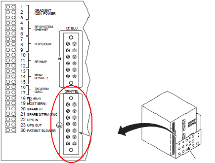
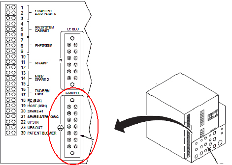
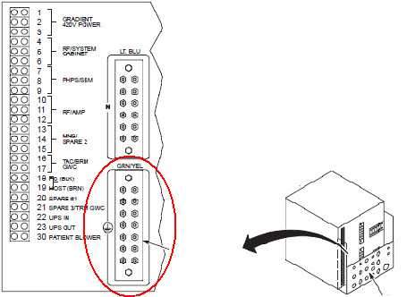
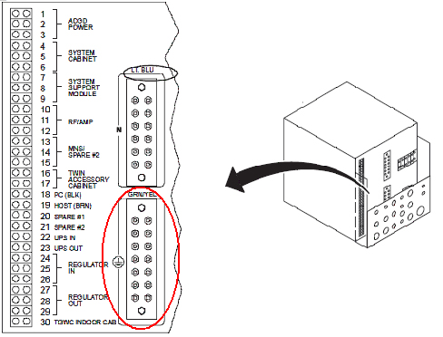
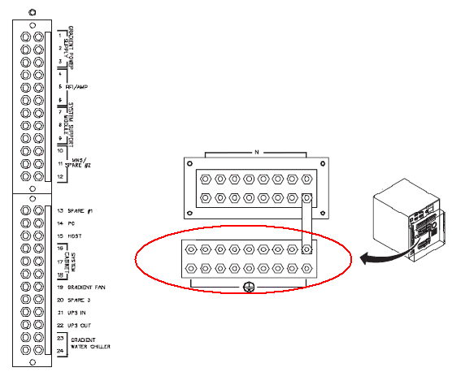

Operating Documentation
Direction 5133315-3, Rev# 14
Signa EXCITE HD 1.5T Service Methods
Module Version 3.0, Version Date 10/27/10
Operating Documentation |
| Required Persons | Preliminary Reqs | Procedure | Finalization |
|---|---|---|---|
| 1 | Not Applicable | 60 mins | 5 mins |
Be sure to understand Preliminary Requirements before beginning this method for measuring Ground Leakage Current.
| Item | Qty | Effectivity | Part# | Manufacturer | |
|---|---|---|---|---|---|
| Dale 600 or 601 (120 VAC) or Dale 600E or 601E (220 VAC) Safety Analyzer | 1 | - | 600/601: 46-285647P1 or 46-328406G1 | - | |
| - | - | - | 600E/601E: 46-285647P14 or 46-328406G2 | - | |
| Digital Volt Meter (DVM) with Jumper Leads | 1 | - | 46-194427P284 | - | |
| Personal Lock | 2 | - | 46-194427P320 | - | |
| Red Warning LOTO Tag | 2 | - | 46-194427P322 | - | |
| Multi-Locking Device (for multiple service technicians) | 1 | - | 46-194427P313 | - | |
| Personal Protective Equipment (PPE) | 1 | - | - | - | |
| ||||
| possible FATAL PERSONAL INJURY! | ||||
| LETHAL VOLTAGES ARE PRESENT WITHIN THE Main Disconnect Panel (MDP) EVEN WHEN ALL PDU BREAKERS ARE OFF. | ||||
| CHECK THAT POWER AT THE MAIN DISCONNECT IS OFF, LOCKED out AND TAGGED out BEFORE PROCEEDING. |
| Condition | Reference | Effectivity |
|---|---|---|
Ground Resistance Checks are completed and passed. | - | - |
All cable installation complete. | - | - |
Facility disconnect off. | - | - |
Power Distribution Unit (PDU) secondary power circuit breakers off. | - | - |
Main Disconnect CB1 PDU is on. | - | - |
All subsystem cabinet circuit breakers and subsystem power switches are On. | - | - |
No hard-wired signal cables connected to any subsystem cabinets. Fiber-optic cables may be connected and not impact this check. | - | - |
Perform Phoenix PDU LOTO.
Dress in the appropriate personal protection clothing.
With a DVM, make sure all energy has dissipated and the Main Disconnect Panel and PDU indicator lights are Off and power switches inactive.
Connect one clamp-type lead to the EXTERNAL jack on the top of the Dale Safety Analyzer. Connect the other clamp-type lead to the CHASSIS jack on the top of the Dale 600/600E. See illustration below.
Illustration 1: Dale Safety Analyzer Connections

On the Dale Safety Analyzer, set the main selector switch to Leakage mA - External
Connect the CHASSIS clamp-type lead to the PDU Ground Bus Bar.
| NOTE: | Observe the following:
|
| ||||
| Only connect one ground cable to the EXTERNAL clamp-type lead. If a second ground cable exists, leave it disconnected during the test. | ||||
At PDU Bus Bar, disconnect ground connection(s) of the subsystem cabinet being tested.
Ground leads on the PDU Bus Bar can be reached by removing the rear cover of the PDU. The ground leads can be removed using appropriate deep sockets.
Connect one of the ground cables disconnected in the previous step to the EXTERNAL clamp-type lead.
Turn on facility Disconnect.
Turn on the CB1 Main Circuit Breaker to power the PDU.
When mode sequencing is complete (all relays stop clicking on standard PDU), turn on Circuit Breaker for the subsystem cabinet under test.
| NOTE: | 500 mV corresponds to 500 mA of leakage current. |
Measure the leakage current for the cabinet ground. See the illustration below for the ground connections to the PDU in the cabinet you are measuring.
If the cabinet being tested has only one ground connection at the PDU Ground Bus Bar, verify that less than 500 mV (500 mA) is measured.
If more than 500 mV (500 mA) is measured, check the ground leakage current for the components in the cabinet. (See the illustration below for the ground connections to the PDU in the cabinet you are testing.)
If the component ground leakage currents are within normal limits, a second ground cable must be added between the subsystem cabinet being tested and the PDU Ground Bus Bar.
If more than 5,000 mV (5,000 mA) is measured, a serious leakage current problem exists that must be corrected. Use the appropriate procedures to troubleshoot the system.
If the cabinet being tested has two ground connections at the PDU Ground Bus Bar, verify that less than 5,000 mV (5,000 mA) is measured. If more than 5000 mA is measured, a serious leakage current problem exists that must be corrected. Use the appropriate procedures to troubleshoot the system.
Turn off Circuit Breaker for the subsystem cabinet under test.
Turn off and LOTO the CB1 Main Circuit Breaker for the PDU .
Turn off facility Disconnect.
| ||||
| Some subsystem cabinets have one ground connection at the PDU Bus Bar, while other subsystem cabinets have two. If two ground connections exist, ensure that both are reconnected in the following step. | ||||
At PDU Ground Bus Bar, reconnect ground connection(s) of the subsystem cabinet being tested.
Repeat Step 1 through Step 15, turning on appropriate circuit breakers for each remaining subsystem cabinet being tested.
Table 1: Ground Leads for HDx 1.5T Systems
| Run # | Circuit Breaker | Destination |
|---|---|---|
| 968 | RF/System Cabinet | RFS Cabinet |
| 1182 | PHPS/SSM | PHPS Module |
| 1234 | RF/Amp | RF Amp (in RFS Cabinet) |
| 970 | TAC/BRM GWC | Water Chiller (Fixed Site) |
| 1081 | PC/Host | Operator Workspace (Old GOC) |
| 1381 | PC/Host | Operator Workspace (New GOC) |
| 973 | Spare 3/TRM GWC | Heat Exchanger (Mobile) |
| 1183 | Patient Blower | Blower Box |
| 1382 | PC/Host | GOC Ground Wire (New GOC) |
| 037 | RF/System Cabinet | System Cabinet Ground (Cabinet Ground) |
Illustration 2: Ground Leads for HDx 1.5T Systems

Table 2: Ground Leads for HDx 3.0T Systems
| Run # | Circuit Breaker | Destination |
|---|---|---|
| 968 | RF/System Cabinet | System Cabinet |
| 1182 | RF/System Cabinet | RF Accessories Cabinet |
| 1113 | RF/System Cabinet | NB RF Amp Cabinet |
| 989 | TAC/BRM GWC | TAC Cabinet |
| 1081 | PC/Host | Operator Workspace (Old GOC) |
| 1381 | PC/Host | Operator Workspace (New GOC) |
| 973 | Spare 3/TRM GWC | Heat Exchanger (Mobile) |
| 1382 | PC/Host | GOC Ground Wire (New GOC) |
| 1150 | RF/System Cabinet | NB RF Amp Cabinet Ground Wire |
| 037 | RF/System Cabinet | System Cabinet Ground (Cabinet Ground) |
Illustration 3: Ground Leads for HDx 3.0T Systems

Table 3: Ground Leads for Excite 1.5T Systems
| Run # | Circuit Breaker | Destination |
|---|---|---|
| 968 | RF/System Cabinet | RFS Cabinet |
| 1182 | PHPS/SSM | PHPS Module |
| 1113 | RF/System Cabinet | NB RF Amp Cabinet |
| 989 | TAC/BRM GWC | TAC Cabinet |
| 1081 | PC/Host | Operator Workspace |
| 037 | RF/System Cabinet | System Cabinet Ground (Cabinet Ground) |
Illustration 4: Ground Leads for Excite 1.5T Systems

Table 4: Ground Leads for Excite 3.0T Systems
| Run # | Circuit Breaker | Destination |
|---|---|---|
| 968 | System Cabinet | System Cabinet |
| 1111 | RF Accessory Cabinet | RF Accessories Cabinet |
| 1113 | RF/Amp | NB RF Amp Cabinet |
| 989 | Twin Accessory Cabinet | TAC Cabinet |
| 1081 | GOC | Operator Workspace |
| 1112 | RF Accessory Cabinet | RF Accessories Cabinet Ground Wire |
| 1150 | RF/Amp | NB RF Amp Cabinet Ground Wire |
| 037 | System Cabinet | System Cabinet Ground (Cabinet Ground) |
Illustration 5: Ground Leads for Excite 3.0T Systems

Table 5: Ground Leads for Twinspeed HD Systems
| Run # | Circuit Breaker | Destination |
|---|---|---|
| 968 | RF/System Cabinet | RFS Cabinet |
| 1182 | PHPS/SSM | PHPS Module |
| 1113 | RF/System Cabinet | NB RF Amp Cabinet |
| 989 | TAC/BRM GWC | TAC Cabinet |
| 1081 | PC/Host | Operator Workspace |
| 037 | RF/System Cabinet | System Cabinet Ground (Cabinet Ground) |
Illustration 6: Ground Leads for Twinspeed HD Systems

Table 6: Ground Leads for Twinspeed LX Systems
| Run # | Circuit Breaker | Destination |
|---|---|---|
| 968 | System Cabinet | System Cabinet |
| 966 | System Support Module | SSM |
| 967 | RF/Amp | RF/AMP |
| 989 | Twin Accessory Cabinet | TAC Cabinet |
| 970 | TGWC Indoor Cabinet | Water Chiller |
| 969 | PC/Host | Operator Workspace |
| 038 | RF/Amp | SRF Cabinet Ground Wire |
| 048 | PC/Host | Operator Workspace Ground Wire |
| 037 | System Cabinet | System Cabinet Ground Wire (Cabinet Ground) |
Illustration 7: Ground Leads for Twinspeed LX Systems

Table 7: Ground Leads for ACGD Systems
| Run # | Circuit Breaker | Destination |
|---|---|---|
| 968 | System Cabinet | System Cabinet |
| 966 | System Support Module | SSM |
| 967 | RF/AMP | RF/AMP |
| 970 | Gradient Water Chiller | Water Chiller |
| 969 | PC/Host | Operator Workspace |
| 973 | Spare #1 | Heat Exchanger |
| 038 | RF/AMP | SRF Cabinet Ground Wire |
| 048 | PC/Host | Operator Workspace Ground Wire |
| 037 | System Cabinet | System Cabinet Ground Wire (Cabinet Ground) |
Illustration 8: Ground Leads for ACGD Systems

Table 8: Ground Leads for ACGD Lite Systems
| Run # | Circuit Breaker | Destination |
|---|---|---|
| 968 | System Cabinet | System Cabinet |
| 966 | System Support Module | SSM |
| 967 | RF/Amp | RF/Amp |
| 970 | Gradient Water Chiller | Water Chiller |
| 969 | PC/Host | Operator Workspace |
| 973 | Spare #1 | Heat Exchanger |
| 038 | RF/Amp | SRF Cabinet Ground Wire |
| 048 | PC/Host | Operator Workspace Ground Wire |
| 037 | System Cabinet | System Cabinet Ground Wire (Cabinet Ground) |
Illustration 9: Ground Leads for ACGD Lite Systems

Restore the system:
Remove leads from Dale Safety Analyzer.
Turn on all PDU secondary power circuit breakers (CB1 through CB17).
Close the PDU Cabinet.
Ensure the system is ready for patient scanning.